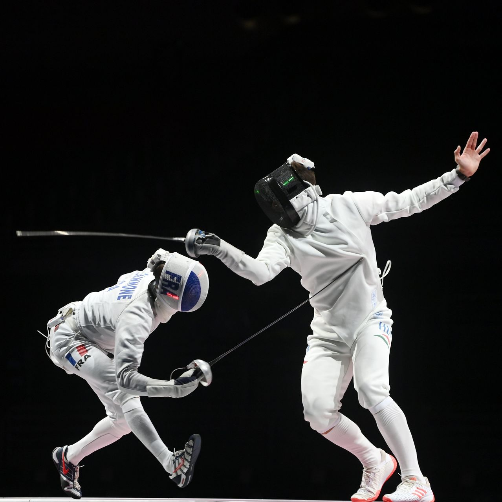

Sedan sommaren 1896 har fäktning varit en olympisk sport och är en av de äldsta olympiska grenarna som finns kvar idag. I mitten av 1700-talet övergick fäktning från att vara enbart för militärt bruk till att vara en sport som idag utövas över hela världen.
Fäktning är uppdelad i tre grenar:
Var gren har olika vapen, därav olika regler. Den vanligaste grenen i världen är florett. I Sverige utövas värja som mest. Reglerna med värja är simpla jämfört med de andra grenarna. Motståndarna tilldelas poäng genom stötar, kontakt mellan vapen och motståndare. Dessa stötar kan ske var som på kroppen. Inom florett och sabel är måltavlan begränsad.
Fäktklädselns viktigaste uppgift är att vara skyddsutrustning. Man använder fäktbyxor och fäktjacka som båda skall tåla en belastning på 800 N. Vid tävlingar är det obligatoriskt att ha en plastrong, och för damer ett bröstskydd, under fäktjackan. Plastrongen är en del av skyddsutrustningen som skyddar den främre kroppshalvan. Jacka och plastrong ger då tillsammans ett skydd på 1600 N. Jackan går upp i halsen och har en nedvikt flik för att förhindra att klingan kommer in i halsen eller ansiktet.
